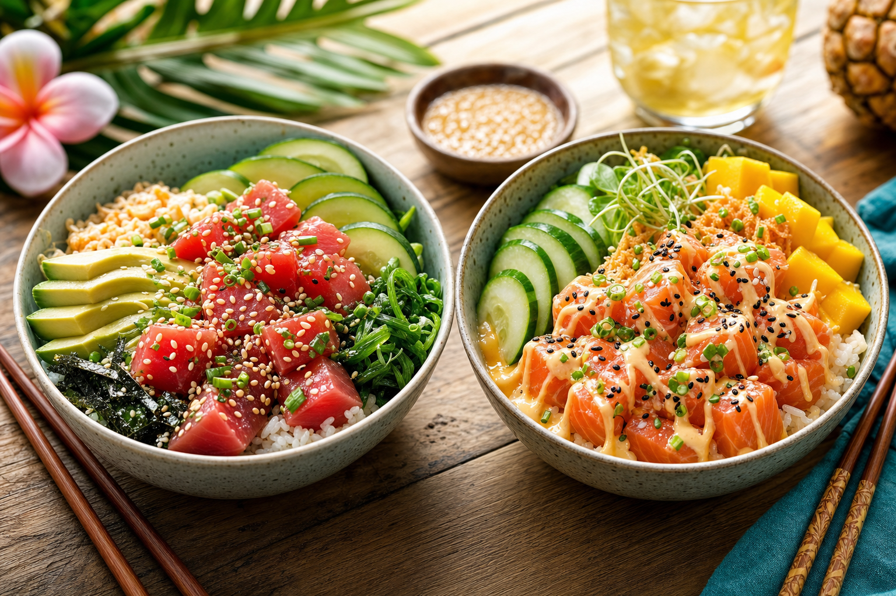

Walk up to our truck and you'll face the first and most important decision: ahi or salmon? For newcomers to poke, this choice can feel overwhelming. Here's everything you need to know about both fish to make an informed call.
Ahi (Yellowfin or Bigeye Tuna)
Ahi is the traditional Hawaiian poke fish — the one Hawaiian fishermen have been eating for centuries. In Hawaiian, "ahi" refers to both yellowfin (ahi) and bigeye (ahi palaha) tuna, both of which are abundant in Hawaiian waters.
Flavor profile: Clean, mild, meaty. Fresh ahi has an almost neutral flavor that pairs beautifully with shoyu marinades. It's slightly sweet with a firm, satisfying bite.
Texture: Dense and meaty. Well-marbled ahi has a satisfying chew that holds up well in a bowl without getting lost under toppings.
Best with: Classic preparations — shoyu, sesame oil, green onion, sesame seeds. The Hawaiian-style with just inamona and sea salt also lets the fish shine.
Cultural significance: Deep. Ahi is the authentic Hawaiian poke fish. If you want to honor the tradition, start here.
Salmon
Salmon is not native to Hawaiian waters — it's a Pacific Northwest fish. It entered Hawaii's poke lexicon through Japanese-Hawaiian culinary fusion in the late 20th century and became enormously popular due to its mild flavor, appealing color, and accessibility.
Flavor profile: Rich, buttery, fatty. Salmon has a more pronounced flavor than ahi — slightly sweet with a characteristic fat that coats the palate pleasantly.
Texture: Softer and more delicate than ahi. Salmon is silkier in texture and benefits from lighter marinades.
Best with: Spicy preparations (spicy mayo, sriracha), fruit-based salsas (mango, pineapple), creamy sauces. The richness of salmon holds up to bold flavors.
Which Should You Choose?
First timer? Start with ahi — it's the most authentic and lets you understand what traditional Hawaiian poke is about. A fan of richer, fattier fish? Salmon will satisfy you. Can't decide? Our Kakaako Crunch bowl does half ahi, half salmon and is our most popular menu item for a reason.